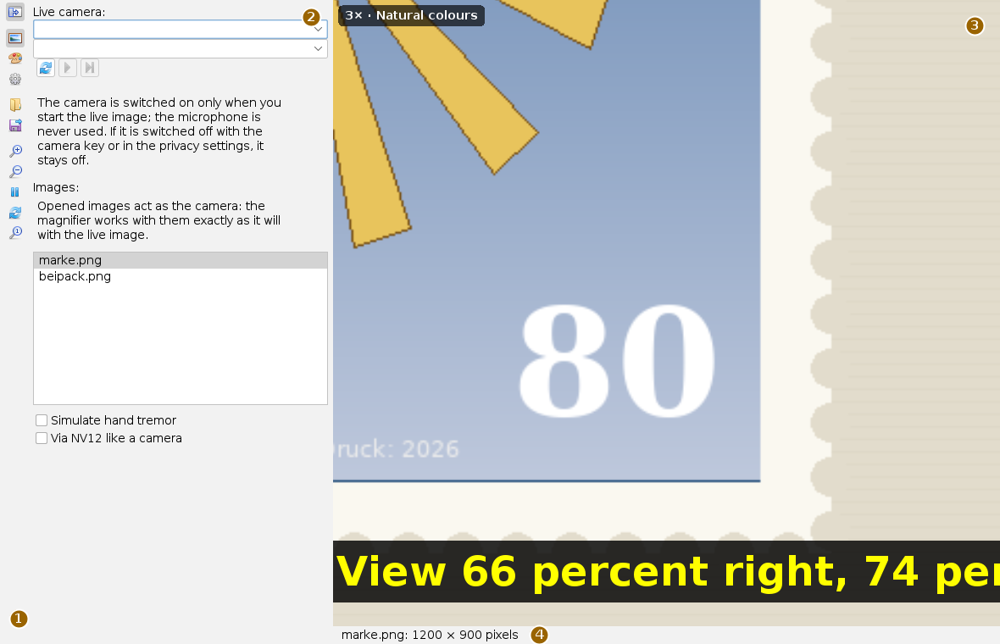
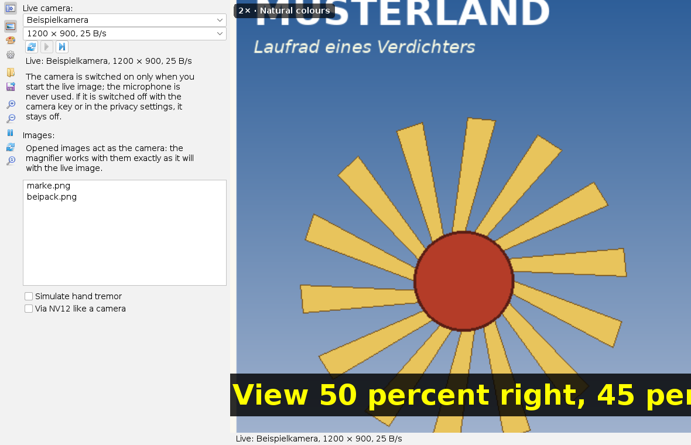
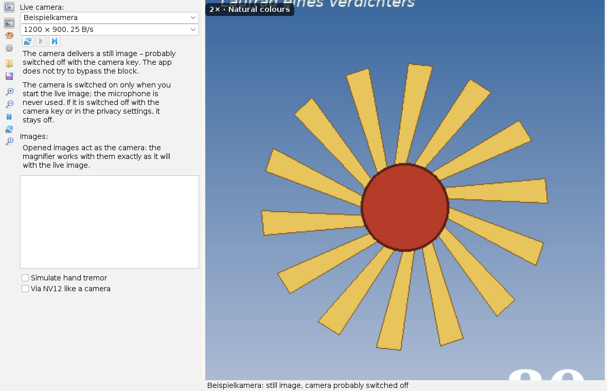
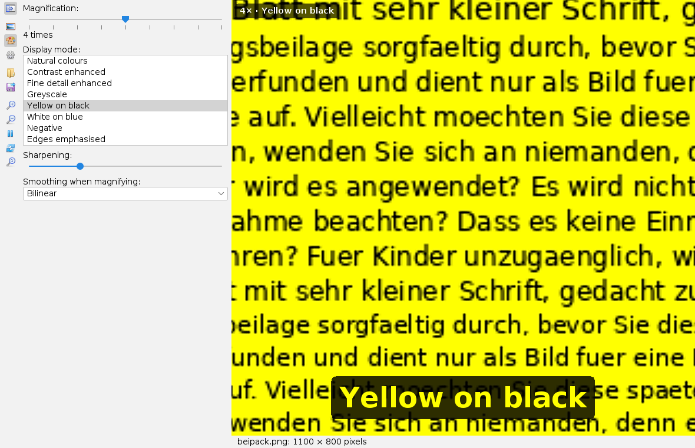
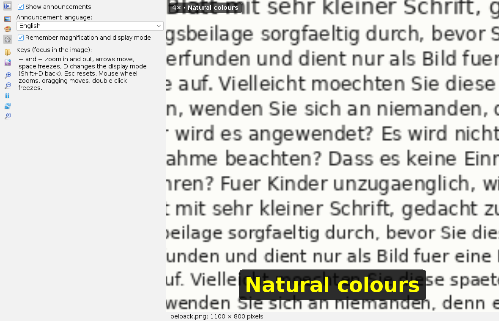

Using the magnifier
User page, as of 6 October 2026. How to open images or start the camera, magnify, move the view, change the display mode, freeze and save, and what the magnifier reports when the camera is switched off. The pictures are screenshots of the app with an invented stamp and an invented package leaflet; the camera in the pictures is simulated.
The menu entry of the app is not translated yet; it is marked * below.
The window
Open the app from the Apps menu with Lupe für Briefmarken und Kleingedrucktes* or with Alt+B; it opens an image file directly.

The magnifier area takes almost the whole window. The top left corner always shows the magnification and the display mode. Every change appears in large type at the bottom of the image for a few seconds. The status line gives the image and its size, or the running camera with its format.
The side bar
The buttons carry icons only; the tooltip says what they do. The top three select a card, the others act at once.
| Tooltip | What happens |
|---|---|
| Image source: camera or images | Card with the live camera and the opened images. |
| Display and magnification | Card with zoom slider, display modes, sharpening and smoothing. |
| Settings | Card with announcements, language and remembering. |
| Open images | Open one or more image files; they go into the list. |
| Save the displayed image as PNG | Saves what the magnifier area currently shows. |
| Zoom in, Zoom out | One zoom step up or down. |
| Freeze / Back to live | Holds the image or lets it run again. |
| Next display mode | Switches to the next display mode. |
| Reset | Back to 2 times, image centre, natural colours and live. |
The button at the very top folds the card away; the magnifier area then gets all the space.
Images as the source
Open images adds files to the list under Images:; a click on an entry shows the image. Opened images act as the camera: the magnifier works with them exactly as with the live image, only the picture stands still. Very large images are reduced on loading; the status line then gives the factor.
Simulate hand tremor shifts every frame by a few pixels, like a hand holding the camera. Via NV12 like a camera converts every frame to the format of a USB camera and back. Both are for trying things out; in everyday use the boxes stay empty.
Live camera

- Under Live camera: press the first button (Search for cameras). The app only lists the cameras, it switches none on.
- Choose a camera in the upper list. The app reads its formats – the camera light comes on briefly – and suggests the largest with at least 15 frames per second. Another format is chosen in the second list.
- Press the second button (Start live image). Below the buttons it now says "Live:" with device and format.
- The third button (Stop live image and release the camera) switches the camera off; the light goes out.
The camera is switched on only when you start the live image – not when the app opens and not when the workspace is restored. The app never uses the microphone.
When the camera is switched off

Many laptops have a key that switches off camera and microphone, and Windows can block access in the privacy settings. The magnifier respects both and does not try to bypass the block:
- If the search finds no camera or Windows refuses access, the reason is shown in the card and in the status line.
- If the image stops while running, the camera is released and not restarted automatically.
- If the driver delivers a black image, the card asks whether the camera is covered or switched off.
- If it delivers the same replacement picture for about three seconds, the magnifier reports "still image". As soon as the picture changes again, it says "Live" again.
Magnification and display mode

Magnification: picks one of the steps 1, 1.5, 2, 3, 4, 6, 8, 12 and 16; the factor is shown below. Display mode: lists the eight modes; a click selects one. Sharpening: sets the strength of unsharp masking after magnifying (far left = off). Smoothing when magnifying: chooses None (hard pixels), Bilinear or Bicubic (sharper).
| Display mode | Effect |
|---|---|
| Natural colours | The image as it is. |
| Contrast enhanced | The brightest and darkest percent are stretched to white and black. |
| Fine detail enhanced | Local contrast: fine lines and perforation stand out. |
| Greyscale | Without colour, with enhanced contrast. |
| Yellow on black, White on blue | Two colours: dark becomes black or blue, light becomes yellow or white. |
| Negative | Light and dark swapped; dark print on a light ground becomes light on dark. |
| Edges emphasised | Outlines in a strong colour. |
A chart of all eight modes on the same detail is on the cmd-lupe page.
Settings

Show announcements switches the large type at the bottom of the image on or off. Announcement language: chooses German or English, independent of the interface language. Remember magnification and display mode restores zoom step and display mode at the next start.
Keyboard and mouse
The keys work when the magnifier area has the focus; a click into the image gives it the focus.
| Key or mouse | Effect |
|---|---|
+ and −, mouse wheel | zoom in and out |
| arrow keys, dragging with the mouse | move the view |
| space, double click | freeze and back to live |
D, Shift+D | next and previous display mode |
Esc or R | reset |
Alt+B | open the app |
What is saved
Save the displayed image as PNG writes the image as it stands in the magnifier area, with magnification and display mode. When the workspace is saved, the app remembers the settings, the list of opened images and the selected image. The camera does not start by itself next time.
Limits
- Cameras are found under Windows only so far.
- On the desktop announcements appear as text; they are not spoken yet. Long announcements can run past the right edge.
- The two-colour modes colour by brightness: dark print on light paper becomes dark print on a yellow or white ground. For light print on a dark ground use "Negative".
What the app can do and what it builds on is described in the overview.